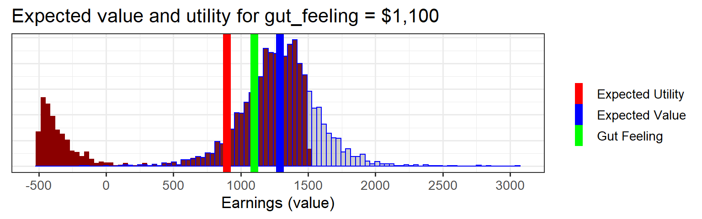
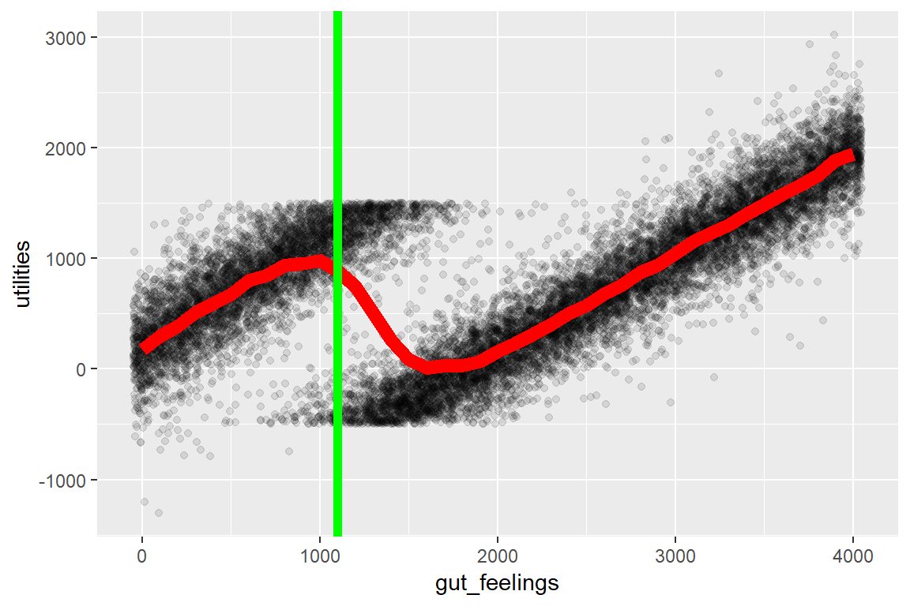
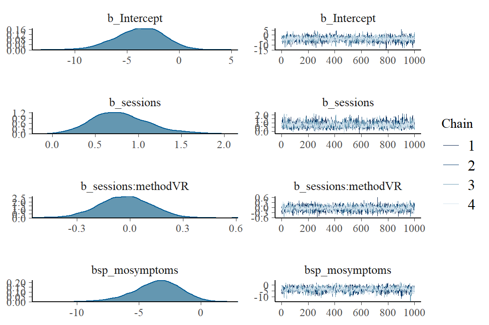
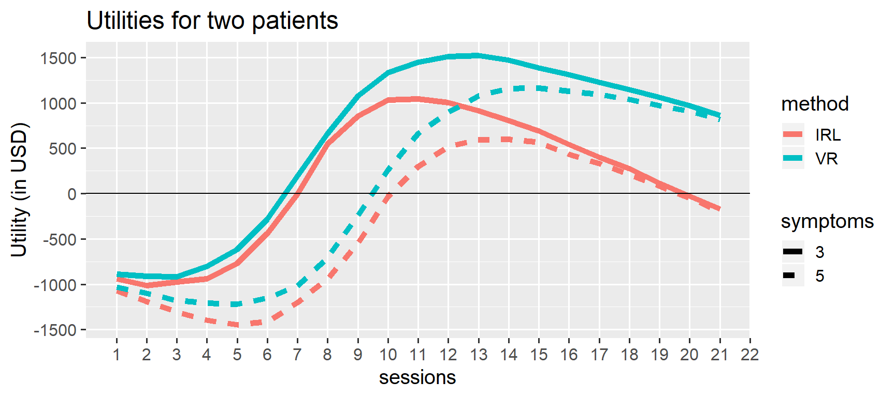
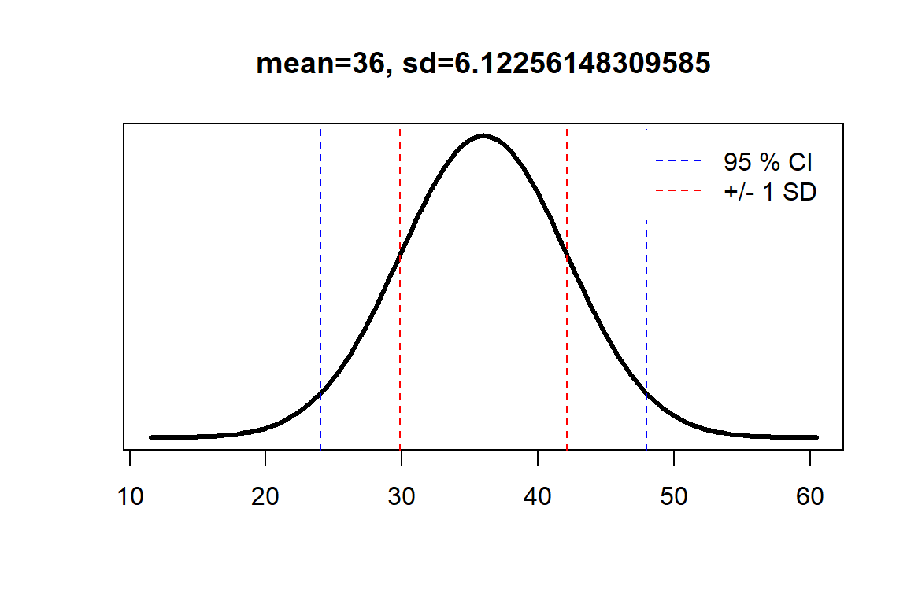

Utility Theory for Dummies
By Jonas Kristoffer Lindeløv (blog, profile).
Last updated: 14 May, 2019 (See changelog).


How do you use data to make optimal decisions? A popular answer is utility theory and the aim of the present document is to show that it can be dead-easy!
Here’s a sneak peek at the full code for the first example we’ll go through. Three simple steps in six lines of code, and you have an optimal decision:
# Step 1: infer predictors (classical regression)
fit_gut = brm(previous_earnings ~ gut_feeling, D)
# Step 2: cost function on predictions from fit
predicted_utility = function(gut_feeling) {
earn_pred = predict(fit_gut, data.frame(gut_feeling=gut_feeling))
utils_pred = ifelse(earn_pred < 1500, earn_pred, earn_pred*0.9 - 18500*0.1)
utils_pred
}
# Step 3: choose the gut_feeling which maximizes Expected Utility
optim(1000, function(x) -mean(predicted_utility(x)))The exact model and layout will vary from problem to problem, but the general three-step approach stays the same. It scales all the way to Generalized Linear Mixed Models (GLMM) and beyond. I start by presenting a minimal example on tax evasion, followed by a slightly more extended example on choosing the optimal treatment plan for a particular PTSD patient.
To set up the required packages, see the Getting Started section. If you feel like it, I’ve written a very simple middle-school-level mathematical intro to these concepts. See also other excellent tutorials here and here.
Setup:set.seed(42)
library(brms)
library(tidyverse)
library(openxlsx)1 Simple example: Evading taxes!
The tax year is almost over and a new customer asks if you can do a quick job before the end of the year. Your gut feeling is that this is a $1,100 job, but you’re unsure how accurate this is. You have recorded your initial gut feelings and the actual corresponding earnings for other jobs this year (see below). The thing is, you’ve already earned $18,500 this year and if you earn more than $20,000 you have to pay a 10% tax on all of your income. I.e., there’s a large cost or negative utility of at least $2.000 if this job turns out to yield above $1,500.
D = data.frame(
previous_earnings = c(2000, 4000, 800, 4000, 700, 400, 3100, 1800, 1700),
gut_feeling = c(1600, 3700, 600, 3600, 600, 300, 3300, 1600, 1400))We will solve this problem using the magical three steps:
- Infer how
gut_feelingpredictsearnings. - Predict
earningswhengut_feeling = 1100and apply a utility function to it (taxes). - Decide whether to take the job.
1.1 Step 1: Infer predictors
Let’s do a simple linear regression to model how that gut feeling predicts actual earnings. For now, we use default priors for simplicity.
library(brms)
fit_gut = brm(previous_earnings ~ gut_feeling, D)1.2 Step 2: Add the utility of taking the job
We used Bayesian brms::brm above because it has an associated predict function, which gives us the earnings and the associated probability for each hypothetical earning given gut_feeling = 1000. This is called the posterior predictive distribution. You just can’t get that from the frequentistic counterparts.
values = predict(fit_gut, data.frame(gut_feeling=1100), summary=FALSE)values is visualized in the blue histogram below.
Now you can calculate the utility of taking this job. Remember, when values < 1500, the utility of each dollar is just one dollar (1.0 * values). However, when values > 1500 the utility is values * 0.9. In addition, there’s a one-time large negative utility of the tax on all your previous earnings (18500 * 0.1). That is our utility function for each of the hypothetical earnings.
utilities = ifelse(values < 1500, values, values * 0.9 - 18500 * 0.1)We can visualize utilities vs. values. See how the above-tax-threshold earnings are shifted to the left:
# Put it in a data.frame
D_plot = data.frame(values, utilities)
# Plot it
ggplot(D_plot) +
# Histograms of posterior predictive and
geom_histogram(aes(x=utilities), bins=100, fill='darkred') +
geom_histogram(aes(x=values), bins=100, col='blue', alpha=0.3) +
# Lines for expected value and expected utility
geom_vline(aes(xintercept=mean(utilities), color='Expected Utility'), lwd=3, show.legend=TRUE) +
geom_vline(aes(xintercept=mean(values), color='Expected Value'), lwd=3) +
geom_vline(aes(xintercept=1100, color='Gut Feeling'), lwd=3) +
# Styling
labs(x = 'Earnings (value)', y='', title='Expected value and utility for gut_feeling = $1,100') +
scale_x_continuous(breaks=seq(-5000, 5000, 500)) +
theme_bw(13) +
theme(axis.ticks.y = element_blank(), axis.title.y = element_blank(), axis.text.y = element_blank()) +
# Legend
#scale_colour_manual(name="Means",values=c('Expected Value'='blue', 'Expected Utility' = 'red', 'Gut Feeling'='green'))
scale_color_manual(name = "", values = c('Expected Value'='blue', 'Expected Utility' = 'red', 'Gut Feeling'='green'))
1.3 Step 3: decide whether to take the job
To summarise, if you take the job:
- Your gut feeling told you that you would earn $1.100 from this job
- Your gut feeling is an underestimate.
predict(fit, data.frame(gut_feeling=1100)show that you should expect on average $1,285. - When factoring in the risk of crossing the tax threshold and the associated costs (loss), you can expect on average around $896.
Now you have the raw numbers on the table. You decide whether to take the job.
1.4 Step 3 extended: choose one of several jobs
A more common situation in decision making is this: you have multiple jobs available, each with it’s own gut_feeling. As a rational decision maker, you should pick the one which gives you the most profit (we sidestep the issue of the amount of work needed to do each job, but that’s easy to implement as we shall see in the next examples).
We wrap step 2 above (prediction + utility function) in a function called predicted_utility and run it for a range of gut_feelings:
predicted_utility = function(gut_feeling) {
# Posterior predictive samples (values)
values = predict(fit_gut, data.frame(gut_feeling=gut_feeling), summary=FALSE)
# Associated utilities. Posterior predictive utilities?
utilities = ifelse(values < 1500, values, values * 0.9 - 18500 * 0.1) #
utilities # Return it
}To make an informed decision, you would probably start by plotting predicted_utility for the available jobs or for a range of gut_feelings and eye-ball which you are willing to go with. You can see that around $1000 is a local sweet spot:
# Evaluate this for gut feelings 0, 100, 200, 300, etc.
D_plot = data.frame(gut_feelings = seq(0, 4000, 100)) %>%
rowwise() %>%
mutate(utilities = map(gut_feelings, predicted_utility)) %>% # Nested list
unnest() # To long format
# Visualize a fraction of it to speed up.
ggplot(sample_frac(D_plot, 0.1), aes(x=gut_feelings, y=utilities)) +
geom_jitter(width=50, height=0, alpha=0.1) + # Utility-transformed posterior predictive samples
stat_summary(geom='line', lwd=3, col='red') # Expected utility
You can see that you should definitely not take the job if your gut feeling is a profit in the range between $1.200 and $3.500 where you would basically work for free. For larger jobs (e.g., $10.000), you would still profit substantially.
If you want to search for local maxima or minima, you can leverage optim to find it. Give it a reasonable starting value and put a minus sign on the mean of predicted_utility to find a local maximum. Here you earn $972 when gut_feeling = 981.
optim(1000, function(x) -mean(predicted_utility(x)))## $par
## [1] 899.4141
##
## $value
## [1] -978.0735
##
## $counts
## function gradient
## 200 NA
##
## $convergence
## [1] 10
##
## $message
## NULL2 Extending it: choosing optimal therapy type and length
This example will stick to the same three-point recipe but extend it to show the versatility of this approach.
2.1 The problem: exposure threapy for PTSD
PTSD is an anxiety disorder where patients have excessive fear responses to some particular “stressors”, e.g., social gatherings. Exposure therapy is the method exposing patients to “safe” (and gradually increasing) levels of these stressors, thus de-traumatizing them. You can do this in real life (IRL) or in virtual reality environments (VR).
Say, you’re a practicing psychotherapist and you keep track of treatment outcomes in your practice using an Excel sheet:
D = readxl::read_xlsx('ptsd_data.xlsx')success == 0is a treatment failuresymptomsis the number of symptoms fulfilled at baseline (0 to 5 according to DSM). The more, the worse the patient is off.method == 'vr'is virtual reality-based exposure.sessionsis the number of sessions used to obtain the success/failure (success)
2.2 Step 1: Infer predictors
Here, we find out how therapy characteristics predict success. Since success is binary, we will use a home-made logistic model (see family=bernoulli below). This may be the first time in the world someone runs this exact model and it has no name. But as long as it can generate a posterior predictive distribution, calculating and optimizing utility is possible.
model_ptsd = success ~ sessions + sessions:method + mo(symptoms)I made chose this exact model to make sure that your intuition will fail you! That’s when we need statistical inference as a decision support. Briefly:
sessions: More sessions increases the chance of success. This will be representmethod == face. We know a priori that this effect is positive in general so below we put anormal(mean=1, sd=1)prior on this slope. Remember that the unit is logits which is not easily interpreted in isolation. We could have used alognormal()prior to constrain it to positive values.sessions:method: The two treatments have differential effectiveness (increase chance of success per treatment session). We know a priori that VR exposure is slightly more effective than IRL exposure (see e.g. Opris et al., 2012 or this or this) so we put anormal(1, 1)prior on this term.mo(symptoms): More symptoms likely reduce the chance of success, everything else being equal. This effect is modeled as ordinal (monotonic,mo).
To put priors on the predictors, let’s first look up their names:
library(brms)
get_prior(model_ptsd, D, family=bernoulli)## prior class coef group resp dpar nlpar
## 1 b
## 2 b mosymptoms
## 3 b sessions
## 4 b sessions:methodVR
## 5 student_t(3, 0, 10) Intercept
## 6 simo mosymptoms1
## bound
## 1
## 2
## 3
## 4
## 5
## 6Now we define some priors (see a helper function here):
priors = c(
# Positive treatment effect of IRL
set_prior('normal(1, 1)', coef='sessions'),
# On top of "sessions", add an even better treatment effect of VR
set_prior('normal(1, 1)', coef='sessions:methodVR')
)Run the inference on the model and priors:
fit_ptsd = brm(model_ptsd, prior=priors, data=D, family=bernoulli)Let’s assess that it runs reasonably well:
plot(fit_ptsd) # Good mixing in traceplots and reasonable posteriors?
# fit_ptsd # summary; check that rhat ~ 1
# pp_check(fit_ptsd) # Posterior predictive checksLooks good. As you can see, our data D overcomes the (relatively vague) VR-positive prior and puts slightly more negative mass on VR compared to IRL (b_sessions:methodVR).
2.3 Step 2: Define a utility function.
We have three predictors. Let us try to make a prediction for a patient with three symptoms and 8 sessions of virtual Reality-based exposure:
new_patient = data.frame(symptoms=5, method='VR', sessions=10) # Hypothetical patient
predict(fit_ptsd, newdata=new_patient) # Predict treatment success## Estimate Est.Error Q2.5 Q97.5
## [1,] 0.563 0.4960771 0 1Around 55% chance of success.
Now, let’s define some utilities. There is a negative utility (cost) of therapist fees and in the opportunity cost of treatment failures. There is a positive utility of treatment success. We want to engage in therapy if the latter to overcomes the former, and to avoid it if it doesn’t.
I propose the following costs (in USD):
value_session = list(VR=-100, IRL=-150) # Negative (cost)
value_outcome = c(success=3000, failure=-1000) # Positive and negativeLet’s define a function which returns the utility associated with a set of predictors:
predicted_utility = function(sessions, method, symptoms) {
# Make the prediction
new = data.frame(sessions, method, symptoms)
prob_success = predict(fit_ptsd, newdata=new)[1] # Just get the success rate
# (Negative) utility of treatment (cost)
value_therapy = value_session[[method]] * sessions # cost times sessions
# Utilities of outcomes (cost and gain)
value_success = prob_success * value_outcome['success']
value_failure = (1-prob_success) * value_outcome['failure']
# Return utility. Some of these are negative.
value_success + value_failure + value_therapy
}(ASIDE: Many would object that we are comparing apples and oranges here: The therapy cost is monetary and the human value of a treatment success/failure is “soft”. However, for utility theory to work, we need to but everything on the same scale to compare them. This is often called \(utils\) and is a big topic in and of itself in philosophy. However, it is the foundation of much policy in practice around the world. Just look up value of statistical life. Although policy literally puts monetary values on people’s lives, \(utils\) should just be though of as relative utilities. Eight utils are double as much as four utils (or at least higher). Whether each util correspond to $10, $56 or the joy of eating an ice cream is arbitrary, as long as the proportions stay the same.)
2.4 Step 3: Make a decision
Visualize the utilities associated with all treatment options (method and sessions) for two patients. One patient with 3 symptoms (solid) and one with 5 symptoms (dashed):
# Make data frame with all combinations of predictors
D_plot = crossing(
sessions = 1:21, # From 1 to 18 treatment sessions
method = c('VR', 'IRL'),
symptoms = c(3, 5)
) %>%
# Now add the associated utility for each combination
rowwise() %>%
mutate(utility = predicted_utility(sessions, method, symptoms))
# Plot it
utility_curves = ggplot(mutate(D_plot, symptoms=as.character(symptoms)), # make symptoms non-numeric
aes(x = sessions, y=utility, color=method, lty=symptoms)) +
geom_line(lwd=2) +
labs(y = 'Utility (in USD)', title='Utilities for two patients') +
# Unneccessary stuff to make it look nicer
scale_x_continuous(breaks=1:30) +
scale_y_continuous(breaks = seq(-3000, 3000, by=500)) +
geom_hline(yintercept=0) +
theme_gray(15) +
theme(panel.grid.minor.x = element_blank())
utility_curves
For a three-symptoms patient, you would probably plan for 11 sessions of VR exposure, everything else being equal. For a five-symptom patient, you would plan for 14 sessions of VR exposure. You would definitely avoid combinations where there is a net negative utility (curve is below zero).
Note that even though IRL exposure is probably more effective (see parameter estimates in fit), this is not outweighted by the increased cost per session! This is particularly evident after 10+ sessions where squeezing out those extra few percent chance of success is simply too expensive using IRL but still worth it for VR. The logistic model has built-in satisficing: no extra utility of overdoing it. As such, I think this is a nice decision support model in this case.
As always, you can let optim find the best optimum number of sessions for one of these lines. It proposes 13 sessions for a 5-symptoms patient with IRL exposure:
optim(12, function(x) -predicted_utility(x, method='IRL', symptoms=5))## $par
## [1] 13.50005
##
## $value
## [1] -648.9918
##
## $counts
## function gradient
## 175 NA
##
## $convergence
## [1] 10
##
## $message
## NULL2.5 Possible tweaks and extensions
- As you collect more data, just enter it in the Excel-file and re-run the code above.
- You can add more
methods (simply enter them in themethodcolumn in the Excel file), other predictors, and more interactions (perhapsmethod:mo(symptoms)if one treatment is better for low-symptom patients). - It is probably too simplistic to model the outcome as success/failure. You can get the same “logistic” behavior by having a continuous outcome (say, a symptom severity scale) using a
family=gaussianorfamily=poissonmodel, and make a diminishing returns utility function as well as strongly penalizing deteriorations. - Incorporate opportunity cost (a negative utility) into the price of a therapy session. The therapist could have spent this time on other patients and the patient could have spent this time and money for other joy-bringing activities.
3 Theory: one ice cream or three pieces of chocolate?
You have a few spare coins which is just enough to buy one ice cream or three peices of chocolate. The ice cream would make you twice as happy as one piece chocolate, but remember that there are three pieces of chocolate and only one ice cream. Which choice maximizes your happiness?
If you chose the three peices of chocolate, just applied utility theory!
Let’s break it down formally to see why three peices of chocolate is better: The values (\(EV_{ice} = 1\) and \(EV_{chocolate} = 3\)) were multiplied with their corresponding utility (\(U_{ice} = 2\) and \(U_{chocolate} = 1\)) so you had to choose between two utility values:
- \(EU_{ice} = EV_{ice} \cdot U_{ice} = 1 \cdot 2 = 2\)
- \(EU_{chocolate} = EV_{chocolate} \cdot U_{chocolate} = 3 \cdot 1 = 3\)
… and you picked the largest one. Well done!
Notice that Utility is arbitrary. It is only the relative utilities that matter. If we set \(U_{ice} = 500\) and \(U_{chocolate} = 250\) we would have obtained \(EU_{ice} = 500\) and \(EU_{chocolate} = 750\), i.e. the same \(EU_{chocolate}/EU_{ice} = 3/2\) preference for chocolate over ice cream.
3.1 Adding probabilities
We can extend the example a bit to include probabilities. This is where intuition does not easy solve the problem and math begins to be truly valuable.
Say that you are unsure how maney pieces of chocolate you get for $2 but have to make the decision in advance, while you stand in line. You think that there’s a 20% chance that you get one peice, 30% chance that you get two peices, and 50% chance that you get three peices. Now, on average (expected value (EV)) you expect to get:
\[ \begin{aligned} EV_{choco} &= \sum_{N=1}^3 N \cdot P(N) \\ &= 1 \cdot 0.2 + 2 \cdot 0.3 + 3 \cdot 0.5 \\ &= 2.3 \end{aligned} \]
peices of chocolate. So when you multiply by the utility (EU_{choco}=1) and get that the expected utility (EU) is 2.3. You should still take that chocolate for a gain of 0.3 utils over the ice cream! You may be disappointed, but on average it’s the better choice.
3.2 Adding a proper utility function
You suddenly recall that your joy of chocolate decreases as you get more of it. Specifically, you have a utility function (often called a loss function) which says that you get 1 util from the first peice, 0.75 form the second, 0.5 from the third. Let’s calculate the Expected Utility (EU) now:
\[ \begin{aligned} EU_{choco} &= \sum_{N=1}^3 N \cdot P(N) \cdot U(N) \\ &= 1 \cdot 0.2 \cdot 1 + 2 \cdot 0.3 \cdot 0.75 + 3 \cdot 0.5 \cdot 0.5 \\ &= 1.4 \end{aligned} \] Ouch, the expected utility is now way below the \(EU_{ice} = 2\). You simply get too little extra happiness from those expected extra peices of chocolate. Choose the ice cream to maximize your happiness (on average)!
3.3 Why we need stats to do this
As you begin working with more and more outcomes (number of peices of chocolate), this becomes complex to do by hand. For example, many models use a normal distribution which has infinitely many outcomes (\(x\) is continuous), each with it’s own probability and utility. Luckily, it is dead simple to get a computer to do this. We will start with a relatively simple example below.
4 Useful helper: use confidence intervals as prior
For a truly cumulative science, we want to add our knowledge to the previous literature to date. However, the literature seldomly conclude with posterior parameters to be used in new experiments. Rather, it usually reports 95% intervals on those parameters. The function below takes an interval and gives you the mean and standard deviation for normally distributed parameters.
# Calculate mean (mu) and sd (sigma)
norm_from_ci = function(ci_lower, ci_upper, level=0.95, plot=FALSE) {
mu = mean(c(ci_lower, ci_upper))
difference = ci_upper - ci_lower
sigma = difference / 2 / qnorm(0.5 + 0.5*level)
# If not plot, just return the parameters as vector
if(!plot) {
c(mu, sigma)
}
else {
# Plot it
curve(dnorm(x, mu, sigma),
from=mu-4*sigma,
to=mu+4*sigma,
lwd=3,
main=paste('mean=', mu, ', sd=', sigma, sep=''),
yaxt='n', ylab='', xlab='')
# Add guides to the plot
abline(v=c(ci_lower, ci_upper), lty=2, col='blue')
abline(v=mu + c(-1, 1)*sigma, lty=2, col='red')
legend('topright', inset=0.02, legend=c(paste(level*100, '% CI'), '+/- 1 SD'), col=c('blue', 'red'), lty=2, box.lty=0)
}
}We can try it out on a [24, 28] 95% CI:
norm_from_ci(24, 48)## [1] 36.000000 6.122561To visualize:
norm_from_ci(24, 48, plot=TRUE)
5 Getting started if you are new to R
This tutorial relies on the following packages. If it still doesn’t run out of the box or if you don’t even have R installed yet, see below.
install.packages('tidyverse') # For data handling
install.packages('brms') # For inference
install.packages('openxlsx') # To read .xlsx into data.framesIf this is your first time in R, you need to install a few things:
- Install R. This is a great programming language and ecosystem for statistics.
- Install Rstudio. This is a great editor to write/run R code.
- To run
brms, you may need some additional software and settings. Mac usually works out of the box. If it does not, install XCode Developer Tools from Apple Store. Windows users need to install Rtools. On some systems this won’t be enough and you’ll get errors, particular about “gc++”, “c++” or “compilers”. These are often resolved by following through on therstaninstallation guides for Windows or for Mac.